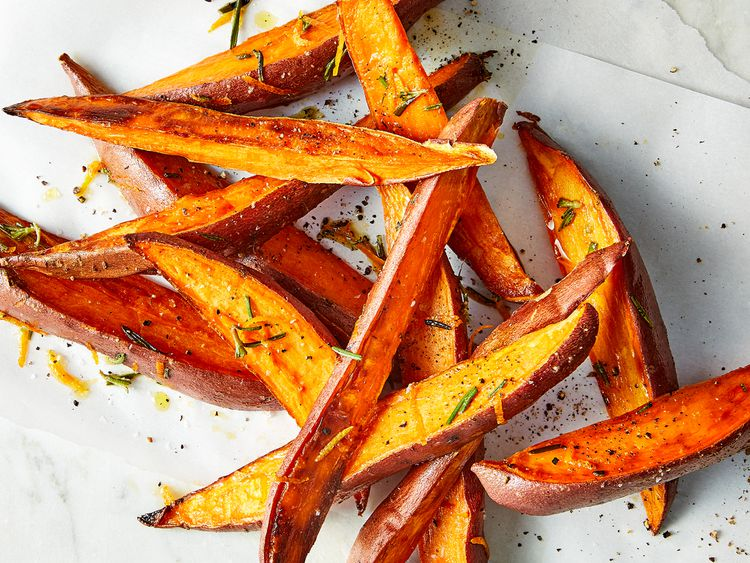

Sweet Potato Wedges with Rosemary-Orange Brown Butter

Description
Hints of natural sweetness make this veggie side a perfect partner for your favorite recipes.
Ingredients
- 4 small sweet potatoes
- 1 tablespoon olive oil
- 1/4 teaspoon salt
- 1/8 teaspoon black pepper
- 2 tablespoons butter
- 2 teaspoons fresh rosemary, finely chopped
- 2 teaspoons orange zest
Steps
- Preheat an oven to 450 degrees F (230 degrees C). Grease a baking sheet and line with oil.
- Cut sweet potatoes (unpeeled) into 1/2-inch wedges and arrange on the prepared baking sheet in a single layer. Drizzle with oil and season with salt and pepper.
- Roast, stirring halfway through, until browned and tender, about 30 minutes. Transfer to a large bowl.
- Meanwhile, heat butter in a small skillet over medium heat until melted and golden brown, about 5 minutes. Stir in rosemary and orange zest. Pour over sweet potato wedges and toss to coat.